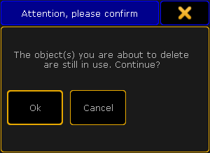

Select the layer where the fixture is and select the fixture.
Tap the Delete Fixture button at the bottom and confirm the deletion.
Exit the EditSetup and tap Yes to confirm changes.
This was the quick steps - Keep reading for more details.
Deleting a fixture completely removes the fixture and the data associated with the fixture - all programming is lost for the fixture.
If a fixture is unpatched then all data is still there and the fixture can be programmed, but it will not output anything since the system do not know where to send the data.
If fixture ID numbers are removed, then the fixture does not go away and the programming is not lost. It cannot be selected or modified, but the data is still there. If the fixture was stored in groups then these group will get a little red marker. The DMX data is still going to the output!
Restriction:
It is not possible to Oops or undo the deletion and the data is gone! It is a good idea to save the show before deleting the fixtures.
Deleting a fixture
It is all done from the setup.
Press the Setup key and then the Patch & Fixture Schedule button.
The fixtures are organized in layers (or maybe just one layer) in the EditSetup.
Select the layer that have the fixture that needs to be deleted.
Select the fixture in the list.
Tap the Delete Fixture button at the bottom. If this window is on screen 1 and the console is a grandMA2 full-size or grandMA2 light, then it might also be possible to press the X13 key.
A confirmation pop-up appears:

Attention pop-up - Deleting an object in use
Tap Ok to confirm deletion of the fixture. Tapping Cancel will cancel the deletion.
When the fixtures are deleted then exit the EditSetup.
A new pop-up asks if the changes should be saved to the active setup.
Tap Yes to confirm the changes and leave the EditSetup (No to discard any changes, Cancel to stay in the EditSetup).